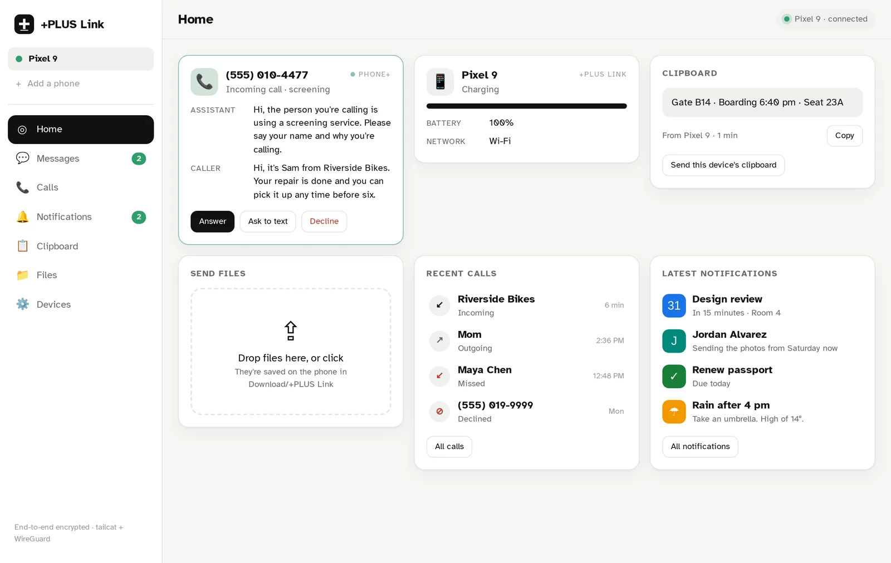
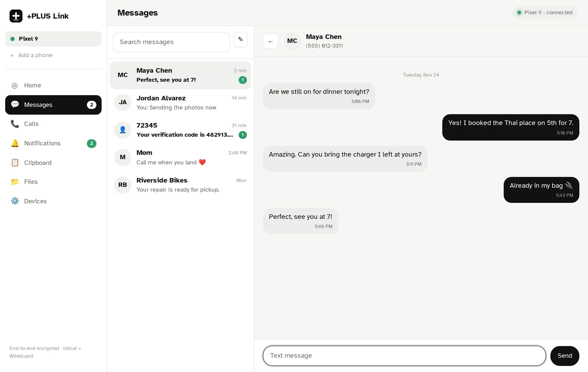
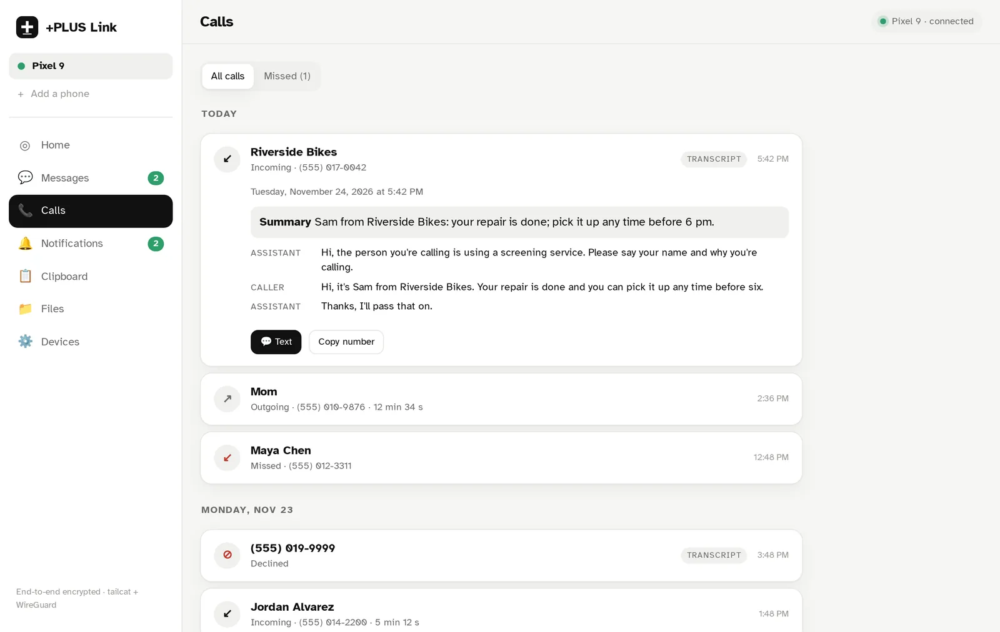
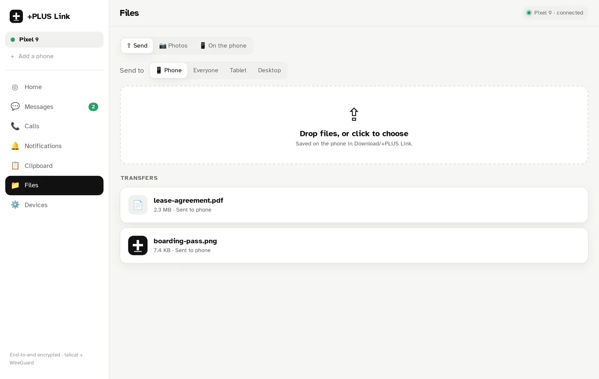
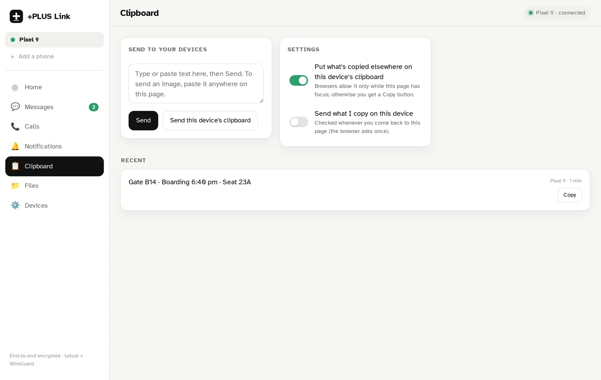
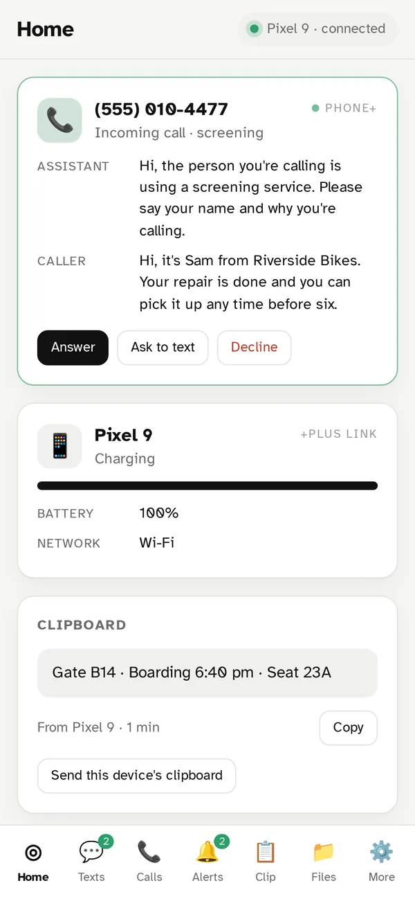
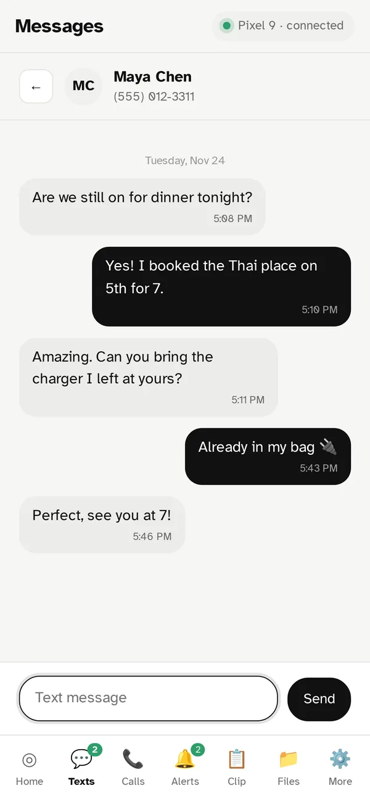
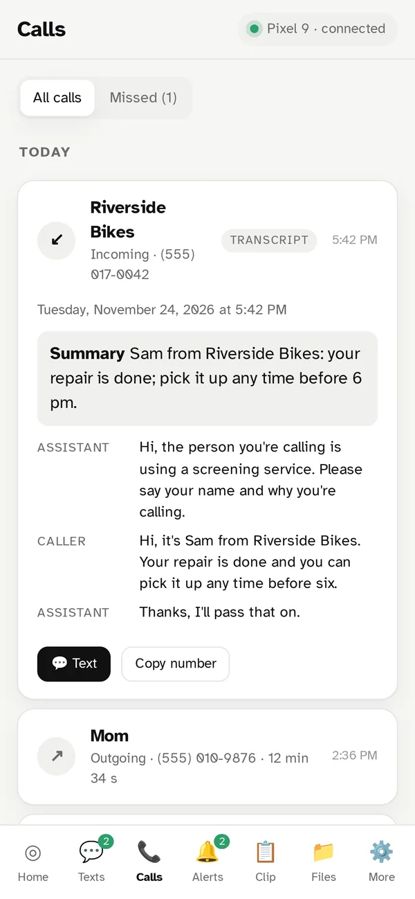
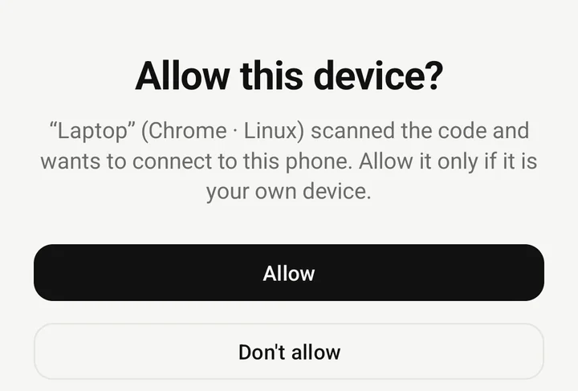

Coming next: +PLUS Link
A preview of what we are building
Preview · working demo, not released yet
Your phone, on every screen
Copy on your phone, paste on your laptop. Answer a text from your tablet. See who is calling, and what the screening assistant heard, from whatever screen you are in front of. Drop a file on the page and it is on your phone.
+PLUS Link connects your computers and tablets to your GrapheneOS phone directly, end-to-end encrypted, with no account and no cloud in the middle. Your texts, photos and files stay on your phone; your other devices just get a secure window onto it.

A quick tour
Texts, on a real keyboard
Read and answer your SMS from any of your devices. The messages are sent by your phone, from your number, as always. Search every conversation at once, and when a sign-in code arrives, one click copies it.

Calls, with what the caller said
When the phone rings, every screen shows who is calling. Calls screened by Phone+ show up live, with the caller's answers as they speak and buttons to answer or turn them away. Afterwards the call history keeps the summary and the full transcript.

Files, photos and your clipboard
Drop files on the page to send them to the phone, or to another of your devices. Browse the phone's photos and a shared folder, and copy a photo straight into a document. Copy text or an image on one device and paste it on another.


On a tablet or a second phone too
The same app adapts to small screens, and it installs like an app from the browser. Pair as many computers and tablets as you like, and follow more than one phone from the same browser.



What it does
- Messages: read, search and reply to your texts; start new ones with suggestions from your contacts; copy one-time codes with one click.
- Calls: who is calling, on every screen, while the phone rings; the call history, with Phone+'s screening summaries and transcripts.
- Notifications: see them, reply to them, press their buttons or dismiss them, grouped by app; turn off pop-ups for an app on one device without touching the phone.
- Clipboard: text and images, in both directions.
- Files and photos: send files to the phone or between your devices, browse a shared folder on the phone, and a photo gallery that understands photos.
- The phone as a drive: mount a folder of your phone on your computer, like a cloud drive that is really your phone (Linux today; Windows next).
- Ring my phone: it rings for 30 seconds, even on silent.
- Live widgets from our other apps, starting with call screening. Any plus-up can show its own live card on your other screens.
- Many devices, many phones: every paired device has its own key and can be removed from the phone at once.
How it stays private
Most "your phone on your PC" services route everything through the vendor's cloud and tie it to an account. +PLUS Link does neither.

- Pairing by QR code, approved on the phone. The phone shows a code holding its address and a one-time key. Scan it, and the phone asks you to allow the new device. No sign-up, no email, no password.
- Encrypted end to end. Every device talks to your phone through its own WireGuard tunnel (Curve25519, ChaCha20-Poly1305) with an extra pre-shared key, from that device to the phone. Nothing in between can read it.
- Point to point. The link is built on tailcat, an open-source peer-to-peer tunnel. A public coordinator only helps the two ends find each other through home routers and mobile networks; then the data goes straight from your device to your phone. Only when no direct path can be made does the coordinator pass the traffic along, still encrypted, so it sees packets it cannot read. (Web pages can't open direct connections, so the browser version always takes that route; the drive helper on your computer connects directly whenever the network allows.)
- Nothing kept anywhere else. Your texts, call history, photos and files stay on the phone. Your other devices fetch what they show, when they show it.
- You stay in charge. The phone lists every paired device; remove one and it is cut off at once, even in the middle of a transfer.
Built so you can't be tracked
Encryption hides what you send. +PLUS Link also hides who is talking to whom, over time:
- Rotating codes. Each device's identity on the coordinator is derived from a secret only it and your phone know, and it changes every few hours. The coordinator can't follow a device from one day to the next or tie its sessions together. The demo already does this for computers and tablets; the phone's own identity rotates too before release.
- Optional Tor. Route the computer side of the link through Tor, so the coordinator never learns where your computer connects from, and deeper traffic analysis has much less to work with.
- Your own coordinator, if you like. Later: pick a third-party coordinator or run your own.
Where it stands
+PLUS Link works today as a demo: an Android app on the phone and a web app on your other devices, plus a small helper that mounts the phone as a drive. An automated end-to-end test runs two phones and two browsers through pairing, texts, calls, notifications, the clipboard and files. Testing on real phones is starting now.
This is a preview: Link is not in the catalog yet, and features may change before it is. The screenshots show the real app with made-up demo content.
What else is coming, from owner lock to spam detection for texts: see the roadmap.